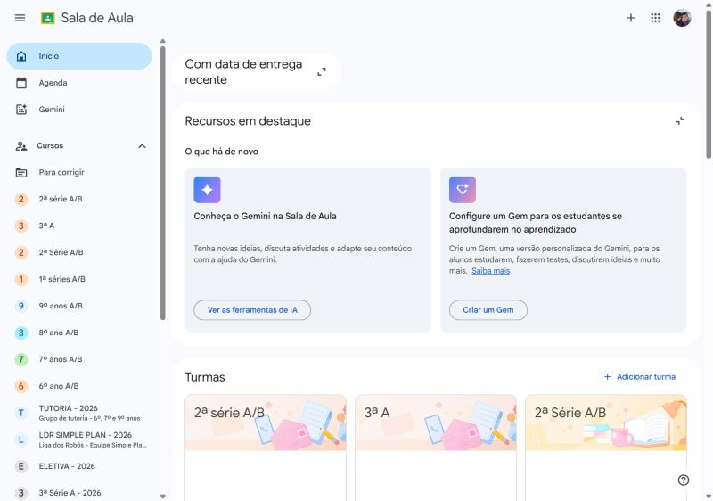

Registro do Diário de Classe e acompanhamento no Professor Presente (PDI 2026)
agosto a novembro de 2026 · Turmas visíveis nas capturas
O que comprova: Capturas do Professor Presente e da Sala do Futuro mostram o acompanhamento do indicador Diário de Classe: agosto em verde, a regularização de 04/09 no mesmo dia e novembro em verde. As imagens e o que cada uma mostra estão na página inicial.
Painel mestre do macrociclo do bimestre (modelo de planejamento)
2º semestre de 2026 · Todas as turmas
O que comprova: Painel que organiza o bimestre em semanas, com disciplinas e turmas, marcos do PEI, avaliações, projetos, riscos, perguntas de revisão semanal, blocos protegidos e fechamento do bimestre.
O modelo está em branco. As checklists por função (21/09/2026) fazem parte do mesmo conjunto e não foram publicadas, porque citam estudantes.
Guias de Aprendizagem do 4º bimestre, com cronograma até 18/12/2026
05/10 a 18/12/2026 · Matemática 7º A, Robótica 3ª A, Tecnologia 6º A
O que comprova: Cada guia organiza o bimestre com justificativa, aprendizagens essenciais, etapas, avaliação e preparação para o Provão Paulista Seriado. Os três guias estão na página Práticas do PEI.
Google Sala de Aula: 20 turmas organizadas em 2026
17/11/2026 · todas as turmas
O que comprova: O Google Sala de Aula tem 20 turmas ativas em 2026: 6º ao 9º ano, 1ª a 3ª série, Eletiva, Tutoria e Liga dos Robôs. Elas organizam a distribuição dos materiais pelas pastas do Drive. As turmas conferidas não têm atividades atribuídas; o registro mostra a organização, não a execução.

Captura de tela
Arquivo publicado: uma captura de tela; a barra lateral mostra parte das turmas.